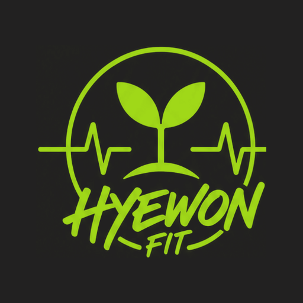
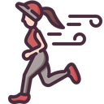
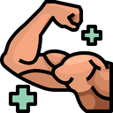
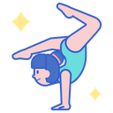
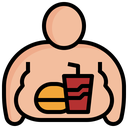

혜원핏
운동처방일지
학생코드는 [다했어요]에서 쓰던 코드를 그대로 사용합니다.
🎨 색을 골라보세요 · 설치 전에 고르면 홈 아이콘도 그 색
안녕하세요
4주 도장판
점이 찍힌 날짜를 누르면 그날 기록을 볼 수 있어요

유산소 인증
삼성헬스·NRC·애플피트니스 스크린샷

근력 인증
운동 사진 + 세트·횟수 입력
삼성헬스 · 애플 피트니스 · 나이키 런클럽(NRC) 중 하나를 정해 4주 동안 계속 사용하세요.
그 앱의 기록 화면을 캡처해서 올리면 됩니다.
누구와 운동했나요?
먼저 골라주세요. 함께한 친구는 다음부터 태그로 바로 나와요
탭하여 사진 선택
오늘 운동 어땠나요?
오늘의 성찰 필수
0/300자
누구와 운동했나요?
먼저 골라주세요. 함께한 친구는 다음부터 태그로 바로 나와요
타임마크(Timemark) 앱 → 템플릿 → 사진 코드 를 고르고 운동하는 모습을 찍으세요.
사진에 날짜와 사진 코드가 보여야 하고, 날짜가 위에서 고른 요일과 같아야 인정됩니다.
한 번 낸 사진은 다시 못 씁니다.
탭하여 사진 선택
운동 내용 · 상체 · 하체 · 유연성 필수
- 상체 운동 — 예) 무릎대고 팔굽혀펴기
- 하체 운동 — 예) 스쿼트
- 유연성 운동 — 예) 앉아 앞으로 굽히기
운동 이름은 «어떤 동작을 했는지» 알 수 있게 구체적으로 적어주세요.
✗ 근력운동, 상체운동, 스트레칭, 유연성, 운동함 ✓ 무릎대고 팔굽혀펴기 · 덤벨 숄더프레스 · 스쿼트 · 런지 · 플랭크 · 앉아 앞으로 굽히기
세 칸을 모두 채워야 저장됩니다. 더 했으면 ＋로 추가하세요.
운동명 · 세트 · 횟수는 필수, 무게는 기구 운동일 때만 적으면 돼요.
플랭크처럼 버티는 운동은 시간을 눌러 분 · 초로 적으세요.
오늘 운동 어땠나요?
오늘의 성찰 필수
0/300자
근력 · 근지구력
※ 기록지에 등급 기준이 없는 항목이라 기록만 남겨요.

유연성※ 등급 기준이 없는 항목이라 기록만 남겨요. 등급은 1·2차 중 높은 기록으로 판정합니다.

신체조성방학 전 → 4주차까지 측정요소별로 어떻게 변했는지 한눈에 볼 수 있어요.
회차별 기록
성찰일지
이번 주차이번 주 성찰
지난 성찰
내 기록 · 점수
최종 성취율
—%
자동 점수 —
주차별 달성
점수 구성
내가 올린 운동 기록
공지사항
—
—
문의하기
궁금한 것 · 잘못된 기록 · 안 되는 것을 적어 주세요. 사진도 같이 보낼 수 있어요
무엇에 대한 문의인가요?
내용
0 / 2000
사진 0 / 5
화면을 캡처해서 붙이면 훨씬 빨리 해결돼요. 같은 사진은 한 번만 들어갑니다
한 번에 여러 장 고를 수 있어요
내가 보낸 문의
아직 보낸 문의가 없어요.
제출하는 중
준비하고 있어요…
0%